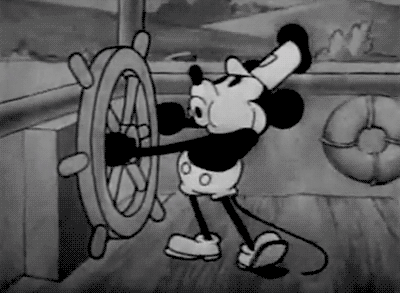
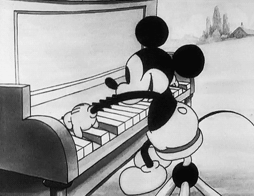

Historia
La idea de recrear la ilusión del movimiento con una serie de dibujos es más antigua que el nacimiento del cine.
Algunos historiadores se remontan a la prehistoria, en la que, mediante pinturas rupestres, se intentaba expresar movimiento,
para que se mantengan estáticos. Otros descubrimientos posteriores, en Egipto y en Grecia corroboran esta tendencia a representar
diferentes fases del movimiento en su arte. Leonardo Da Vinci también experimentó con la figura en movimiento, como se puede comprobar
en su ilustración de las proporciones humanas, en las que dibuja las que parecen ser dos fases de una misma acción.


El primer intento que se conoce de una animación mediante la proyección de imágenes data de 1640, cuando el
alemán Athanasius Kircher inventó el primer proyector de imágenes, la «linterna mágica», en la que, mediante grabados
en cristales, era capaz de proyectar diferentes fases consecutivas del movimiento, cambiando los cristales de forma mecánica.
En una de sus proyecciones representaba a un hombre mientras dormía, abriendo y cerrando la boca.
El incipiente mundo de la animación estuvo estancado hasta 1824, cuando Peter Mark Roget descubrió el principio de persistencia
de la visión, fundamento en el que se basan todas las imágenes proyectadas que conocemos hoy en día. Demostraba que el ojo humano
retiene la imagen que ve durante el tiempo suficiente para ser sustituida por otra, y así sucesivamente, hasta realizar un movimiento
completo, como se ve en su «taumatropo».
Aunque fueron muchos los inventos nacidos a la sombra del principio de persistencia de la visión, ninguno pasó de la categoría de juguete
hasta la llegada del «Phenakistoscopio» de Joseph Antoine Plateau, en 1831, en el que conseguía plasmar un movimiento completo mediante
el uso de dibujos.
Entre las bases del origen de la animación está el mismo juego de sombras y la proyección de siluetas de papeles recortados creados por
la cultura china.